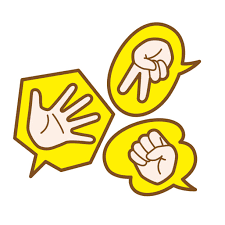

Projects
Rock Paper Scissors
Tech used: C#, .Net 6.0
I created console app to learn key concepts of C#, including encapsualtion and dependency injection.
Maths Game

Tech used: C#, .Net 6.0
Console app. The user can select from addition, subraction, division or multiplication games to improve their maths skills
Counter App

Tech used: HTML, CSS, Javascript
This app allows you to count and save the increments. This can be used to count people entering a venue or building.
Order App

Tech used: HTML, CSS, Javascript
This app is a sample order site for a cafe, this was a project for the Harvard CS50x course.
Chrome Extension

Tech used: HTML, CSS, Javascript
This is a chrome extension that allows you to add urls to your local storage in order to track leads. Please follow the instructions in the README.
Recipe API Project
Tech used: Python
An API run on the command line which searches for recipes based on an ingredient request. The search can be filtered by calories or by an additional word and the results saved as a text document. This was a group project for the CodeFirstGirls course.
Adventure Booking Project
Tech used: Javascript, React, HTML, CSS
This is a Javascript app, which uses React to manage state and to add components. The app allows users to select and book an adventure, which sends an email with the form entry from the user
Power Automate
Tech used: Power Automate, JSON, Excel, Forms
Unit Change Process
When I started working at the School of Management, students were required to download/print or email unit change request. I automated the process using a Microsoft form and Power Automate, this could allow for data to be automatically stored in an Excel spreadsheet.
Processing unit changes was a time consuming task, using Power Automate to send an adaptive card to a Teams area, where the outcome email could be sent automatically, with additional notes, to students more than halved the processing time.
Students received an automatic email confirming their choice which reduced any additional incoming messages.
Extension Process
I created a similar process for the extension requests, however this was a more complex project as each case had to be sent to different teams, I used the switch method in Power Automate to accomplish this.
I presented my solution to the Director of Teaching, Director of Studies and programme team, my solution was implemented and has been running for over 2 years.
This process has reduced workload and loss of information or missed requests.